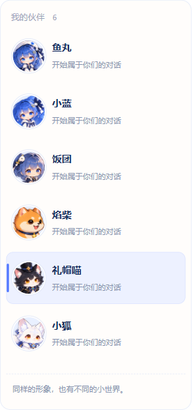
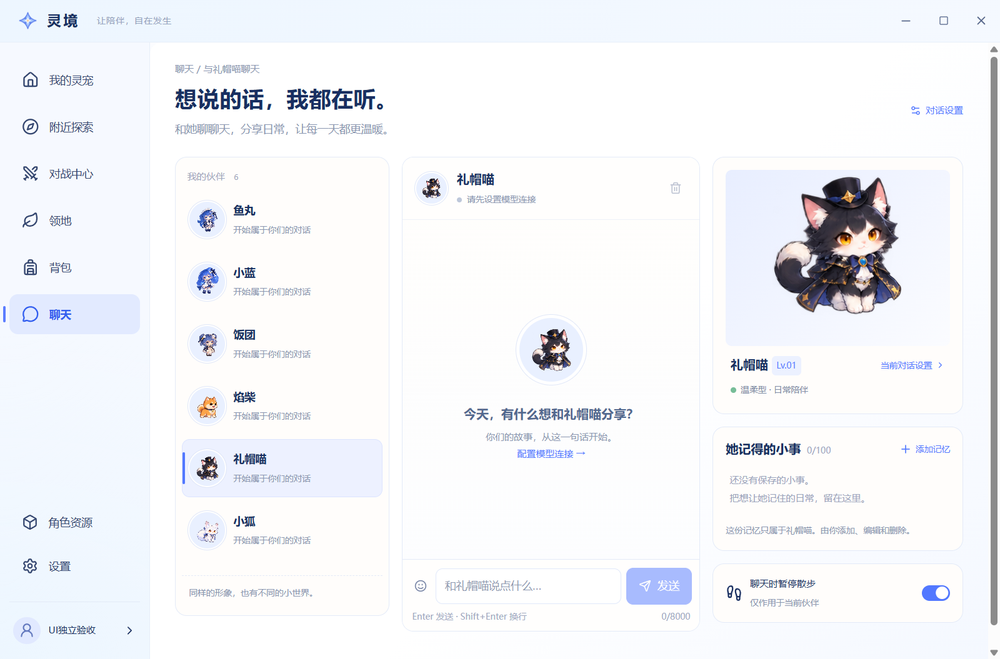
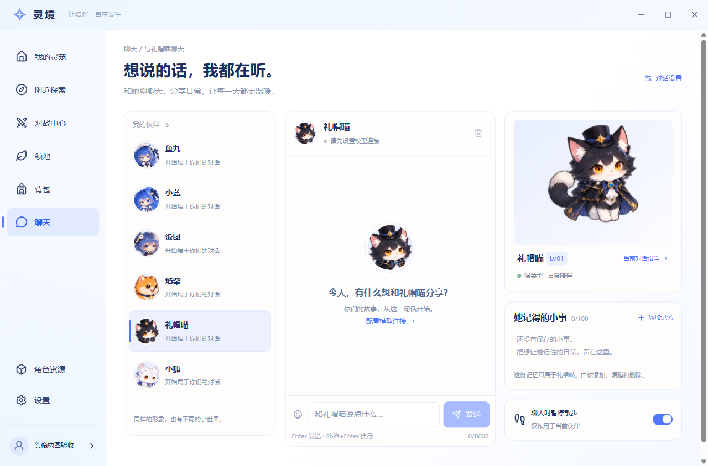

主会话 recheck-1（source 3aef2bf）已通过 15 张图和 12 项指标；本轮只处理头像仍在缩小整人的构图差异。使用资源模块 1dac04e 提供的 ResourcePortrait / resolveResourcePortrait，按真实首个待机帧的主体范围裁为脸部／上身近景。
六个 canonical resourceId、petId 与图集文件保持一致，未生成另一套头像。聊天列表、线程头部、空状态和 AI 设置伙伴头像共用同一入口；已移除本模块原有 CSS scale(1.8)。右侧全身预览与动画舞台保持原入口。本轮使用隔离本地账号和空历史，模型请求为 0。



1440×900 聊天 · AI 设置头像 · viewBox、图集 SHA-256 与定向检查记录
截图文件未修改。局部六头像图为真实控件截图，完整页面同时保留；原基线与当前截图的 DPR／输出尺寸可能不同，应按 CSS 视口对照。4 项头像定向检查通过，合并后的 portrait/HUD 小范围复验由主会话执行。